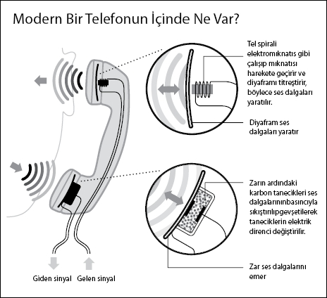

Alexander Graham Bell iletişimi
dönüştüren icadıyla nasıl ilgi odağı oldu
Lesley Gavin, fütürolog ve Avrupa Komisyonu danışmanı
İtalyan Antonio Meucci, bir romatizma hastasını elektrik sandalyesinde "tedavi" ettiği sırada ölümüne sebep olurken, kulağının yanındaki elektrik iletkeninden hastanın acı acı bağırdığını duyduğuna emindi. Yaptığı inceleme sonucunda Meucci, elektrik iletkenine bağlı bakır telden geçen ve sonra titreşen sesin acı bağırtıya dönüştüğünü keşfetti.
"Telefonun icadı ve uzun mesafelerle anında iletişim kurabilmesi, iletişim hakkındaki düşünce tarzımızı değiştirdi. Yalnızca insanların iş yapma tarzlarını değiştirmekle kalmadı, sosyalleşme biçimimizi de değiştirdi. Telefon, faks cihazları, e-posta ve nihayet YouTube ve Facebook gibi bilgi paylaşım servislerinin yolunu açtı."
Lesley Gavin
| Bunları Biliyor Muydunuz? | |
| ~ | 1936'da İngiliz telefon operatörü Bayan Jane Cain konuşan saat hizmetinin ilk sesi oldu. |
| ~ | 1937'de 999 acil çağrı numarası Londra'da hizmete girdi. |
| ~ | 2008'de Ofcom 126 milyon civarında numara tahsis etti. |
Sonraki aylarda bir zardaki ses titreşimlerini toplayacak bir cihaz yapmaya koyuldu. Bu titreşen zar bir elektromıknatısın hareket edip kablodaki bir akımı harekete geçirmesini sağladı. Bu işlemin tersi cihazın diğer ucunda ses üretti. Böylece ilk telefon doğmuş oldu.
Öyleyse neden telefonun mucidi olarak bilinen kişi İskoç Alexander Graham Bell?
Meucci cihazının patentini ilk kez 1871 yılında aldı, ama 1874'te patent için ödemesi gereken 250 doları bulamadı. Bell tetikte bekliyordu. Meucci ile bir laboratuvarı paylaşıyordu ve bu müthiş icadı ticari bir başarıya dönüştürebileceğini çoktan fark etmişti.
Bell farklı sinyal frekanslarını kullanarak çok sayıda telgraf mesajı gönderecek bir sistem geliştirmek için yeterli paraya sahipti. Kendi telefon cihazında ses ona yönlendirildiğinde ince bir zar titreşiyordu. Bu da elektromıknatısın önündeki bir demir çubuğu hareket ettirip elektrik akımı üretiyordu. Diğer uçta ise bunun tersi işlem gerçekleşiyordu: Elektrik akımı demir çubuğu harekete geçiriyor, o da zarı hareket ettirip ses dalgaları üretiyordu.
Rivayete göre 14 Şubat 1876'da Bell sadece birkaç saatlik farkla Elisha Gray'i yenip cihazın patentini aldı. Böylece ikisinin arasına düşman tohumları atıldı. Gray, Bell'i fikir hırsızlığı ile suçladı. Patent görevlisi de Bell'in kendisine rüşvet verdiğini iddia etti. Bell hayatı boyunca 600 davayla boğuştu ve her defasında kazandı. Hatta Antonio Meucci bile Bell'e dava açtı ve 1889'da öldüğünde zafere bir hayli yaklaşmıştı. Neyse ki talihsiz İtalyan nihayet 2002 yılında ABD Kongresi tarafından telefonun gerçek mucidi olarak tanındı.
